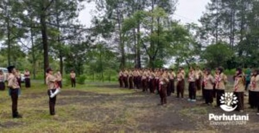

TASIKMALAYA, PERHUTANI (19/01/2026) | Perum Perhutani KPH Tasikmalaya menegaskan komitmennya dalam pembinaan generasi muda kehutanan melalui kehadiran dan keterlibatan langsung pada kegiatan Gladian Tangguh dan Pengukuhan Anggota Baru Satuan Karya (Saka) Wanabakti Angkatan ke-42, yang dilaksanakan di Bukit Nangreu, Gunung Galunggung, Sabtu (17/01).
Kegiatan tersebut dihadiri oleh Administratur/KKPH Tasikmalaya Danu Prasetyo selaku Mabisaka Wanabakti, didampingi jajaran Perhutani KPH Tasikmalaya. Turut hadir Ketua Saka Wanabakti Kwartir Cabang Kabupaten Tasikmalaya, Rodiana Rahman, Pamong Saka Wanabakti Kabupaten Tasikmalaya, Bedi Jubaedin, serta para pengurus, pembina, dan peserta pengukuhan Angkatan ke-42.
Dalam sambutannya, Danu Prasetyo menyampaikan bahwa Saka Wanabakti memiliki peran strategis dalam menanamkan nilai kepedulian lingkungan dan tanggung jawab sosial kepada generasi muda. “Saka Wanabakti merupakan wadah pembinaan karakter bagi generasi muda agar memiliki kepedulian terhadap kelestarian hutan dan lingkungan. Perhutani berkomitmen untuk terus mendukung kegiatan positif yang membentuk sumber daya manusia berwawasan lingkungan,” ujar Danu.
Sementara itu, Pamong Saka Wanabakti Kabupaten Tasikmalaya, Bedi Jubaedin, menegaskan bahwa kegiatan Gladian Tangguh menjadi tahapan penting sebelum peserta resmi menjadi anggota Saka Wanabakti. “Melalui Gladian Tangguh, peserta dibekali pengetahuan, keterampilan, serta mental kepramukaan di bidang kehutanan. Kami berharap anggota Angkatan 42 mampu berperan aktif sebagai kader pelestari hutan di tengah masyarakat,” ungkap Bedi.
Pengukuhan Angkatan ke-42 ini merupakan puncak dari rangkaian kegiatan Gladian Tangguh yang bertujuan meningkatkan pengetahuan, keterampilan, serta mental kepramukaan di bidang kehutanan dan lingkungan hidup.
Melalui kegiatan ini, Perum Perhutani KPH Tasikmalaya berharap sinergi dengan Gerakan Pramuka, khususnya Saka Wanabakti, dapat terus diperkuat sebagai bagian dari upaya pembinaan masyarakat dan pengelolaan hutan yang berkelanjutan.
Editor: WK
Copyright © 2026 Warta Nusantara Barat